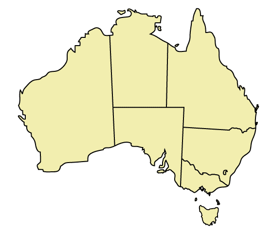

<div class="navbar">
	<div class="navbar-inner">
		<div class="container">
			<div class="pull-right navbar-search">
				<div class="input-prepend">
				  <span class="add-on">Find</span>
				  <input type="text" ng-model='filterQuery' placeholder="type something here to find it"/>
				</div>
			</div>
			<div class="pull-right other-icons" id='navbar-actions'>
				<a class='btn' ng-click='currentUnit.unit = -1'>See all modules</a>
				<button class="btn btn-large btn-success" ng-click='displayDialog()'><i class="icon-book"></i> Explore my timeline</button>
				<div modal='timelineShown' close='close()'>
					<div class="modal-body">
						<div id="timeline-embed"></div>
						<div id='timeline-graph' gh-timeline-graph gh-show='selectedGraph'>
						</div>
					</div>
					<div class="modal-footer">
			            <button class="btn btn-warning cancel" ng-click="close()">Cancel</button>
			        </div>
				</div>
			</div>
			<a href="#" class="brand">Our History</a>
			<h4 class='unit-heading'>
				{{currentUnit.unit.name}}
			</h4>
		</div>

	</div>
</div>

<div class="container-fluid">
	<div class="row-fluid">
		<div class="span3 well" id='item-list-pane' gh-vertical-fluid>
			<div class='nav nav-list' id="item-list">
				<div ng-show='items.length > 3' id='more-results' class='muted'><i class='icon-chevron-down'></i> Scroll down for more results <i class='icon-chevron-down'></i></div>
				<div ng-repeat='item in items | orderBy:["type","start","title","url"] | filter:filterQuery' ng-animate='{ enter: "appear" }' ng-click='$parent.$parent.selectedIndex = $index'>
					<div ng-class='{ selected: selectedIndex == $index }'>
						<span class='pull-right added-icon added' ng-show='addedItems.indexOf(item) != -1' ng-animate='{ show: "zoom", hide: "unzoom" }'>
							<i class="icon-plus"></i>
						</span>
						<span ng-switch='item.type'>
							<div ng-switch-when='image'>
								<ng-include src="'_image_cell.html'" ng-animate='"appear"'></ng-include>
							</div>
							<div ng-switch-when='text'>
								<ng-include src="'_text_cell.html'" ng-animate='"appear"'></ng-include>
							</div>
							<div ng-switch-when='graph'>
								<ng-include src="'_graph_cell.html'" ng-animate='"appear"'></ng-include>
							</div>
							<div ng-switch-when='media'>
								<ng-include src="'_media_cell.html'" ng-animate='"appear"'></ng-include>
							</div>
						</span>
					</div>
				</div>
			</div>
		</div>
		<div class="span9 well">
			<div class="pull-right">
				<div ng-switch='addedItems.indexOf(currentItem) == -1'>
					<div ng-switch-when='true'>
						<a class="btn btn-primary" ng-click='addedItems.push(currentItem); updateSelectedGraph();' id='add-to-timeline-button'><i class="icon-plus"></i> Add to timeline</a>
					</div>
					<div ng-switch-default>
						<a class="btn btn-warning" ng-click='addedItems.splice(addedItems.indexOf(currentItem), 1); updateSelectedGraph();' id='remove-from-timeline-button'><i class="icon-minus"></i> Remove from timeline</a>
					</div>
				</div>
			</div>
			<div ng-switch='currentItem.type'>
				<div ng-switch-when='image'>
					<ng-include src="'_image_body.html'" ng-animate='{ enter: "appear", leave: "hide" }'></ng-include>
				</div>
				<div ng-switch-when='text'>
					<ng-include src="'_text_body.html'" ng-animate='{ enter: "appear", leave: "hide" }'></ng-include>
				</div>
				<div ng-switch-when='graph'>
					<ng-include src="'_graph_body.html'" ng-animate='{ enter: "appear", leave: "hide" }'></ng-include>
				</div>
				<div ng-switch-when='media'>
					<ng-include src="'_media_body.html'" ng-animate='{ enter: "appear", leave: "hide" }'></ng-include>
				</div>
			</div>
		</div>
	</div>	
</div>
